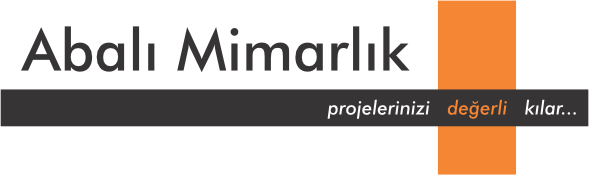
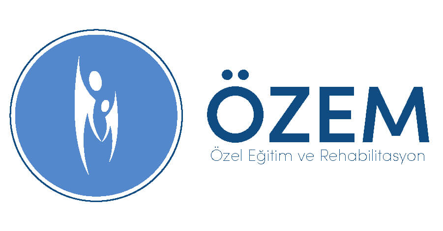
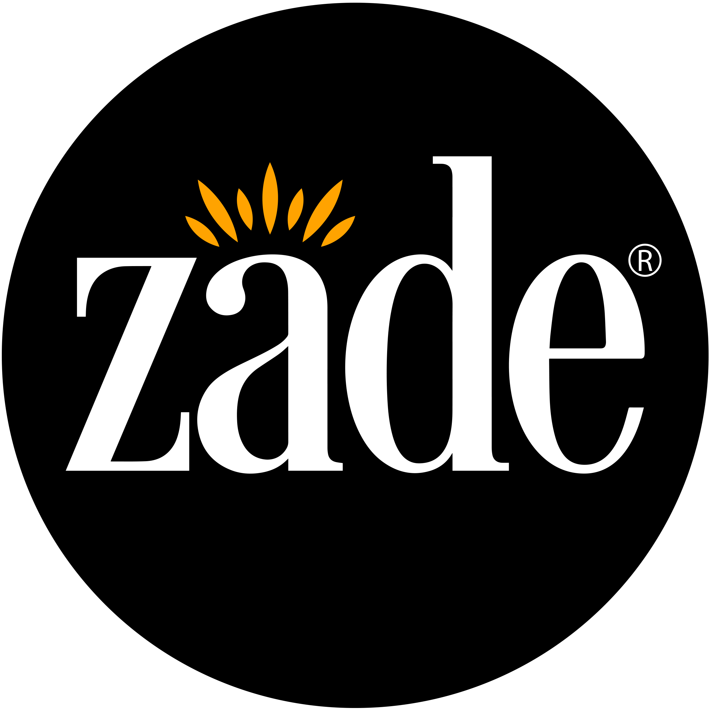

Memecik
Memecik zeytini, yüksek polifenol potansiyeli ve yoğun aromatik karakteriyle özellikle Ege markalarında öne çıkar.
Memecik odaklı zeytinyağı markaları, benzer bölgeler ve ilgili zeytin çeşitleri. 142 marka listesi.
Bu Sayfadaki Markalar
Adatepe
Kazdağları eteklerinde üretim yapan köklü marka. Taş baskı ve natürel sızma zeytinyağı çeşitleriyle bilinir....
Laleli
Ödüllü Türk zeytinyağı markası. Uluslararası yarışmalarda çok sayıda altın madalya kazanmıştır. Erken hasat natürel sızma zeytinyağları ile bilinir....
NovaVera
Kuzey Ege merkezli butik üretici. Erken hasat, soğuk sıkım ve yüksek polifenol odaklı natürel sızma zeytinyağlarıyla bilinir....
Oleamea
Premium segment Türk zeytinyağı markası. Uluslararası yarışmalarda ödüller kazanmıştır. Erken hasat, yüksek polifenollü natürel sızma zeytinyağları sunar....
Tariş
Ege Bölgesi zeytinyağı kooperatiflerinin birliği. Üreticiden doğrudan temin edilen zeytinlerle üretim yapar. Türkiye'nin en büyük zeytinyağı ihracatçılarından biridir....

MarketAbalı
Abalı, Aydın, Ege çizgisinde geniş dağıtım ağıyla zeytinyağı ürünleri sunan üretici olarak öne çıkar....
Alaboğaz
Alaboğaz, müşterilerine Milas bölgesindeki Memecik cinsi zeytinlerini erken hasat eden, soğuk sıkım yöntemiyle işleyip yüksek polifenollü natürel sızma Milas Zeytinyağı sağlayan bu...
Alhatoğlu Zeytinyağları
Sofralık zeytin kalitesinde zeytinlerden elde ettiğimiz düşük asitli ve yüksek kaliteli zeytinyağlarımız sofralarınızın vazgeçilmezi olacak......
AnadOlive Gıda
AnadOlive Gıda, natürel sızma ve özel seri zeytinyağı sunan üretici olarak dizine eklenmiştir....
Anafortis
Eceabat çıkışlı, ödüllü erken hasat natürel sızma zeytinyağlarıyla tanınan butik üretici....
Angelos
Angelos, İzmir çizgisinde organik üretim çizgisinde zeytinyağı sunan üretici olarak öne çıkar....
Asiltane
Soğuk sıkım ve özel hasat serileri sunan natürel sızma üreticisi. Farklı hacimlerde premium zeytinyağı çeşitleri hazırlar....
Aybal Organik
Aybal Organik, organik üretim çizgisinde zeytinyağı sunan üretici olarak dizine eklenmiştir....
BAKTAT ZEYTİN
BAKTAT ZEYTİN, geniş dağıtım ağıyla zeytinyağı ürünleri sunan üretici olarak dizine eklenmiştir....
Bata Tarim
Bata Tarim, geniş dağıtım ağıyla zeytinyağı ürünleri sunan üretici olarak dizine eklenmiştir....
Bella Mordane
Bella Mordane'nin yüksek polifenollü, düşük asit oranlı zeytinleri ile tanışın. İlk ve erken hasat zeytinyağlarımız soğuk sıkım yöntemiyle elde edilir....
Berolivo
Eceabat çıkışlı sürdürülebilir ve yüksek kaliteli natürel sızma zeytinyağı üreten butik marka....
Besler
Besler, geniş dağıtım ağıyla zeytinyağı ürünleri sunan üretici olarak dizine eklenmiştir....
Beyaz Altın
Premium Türk zeytinyağı markası. Erken hasat zeytinlerden üretilen natürel sızma zeytinyağları ile dikkat çeker....
Bilgem Zeytin
<p>Kuzey Ege’de Balıkesir, Burhaniye, Yunuslar Köyü yaylasında, kendi zeytinliğimizde yetişen, Organik Edremit/Ayvalık cinsi zeytinlerden elde edilen Natural Sızma Zeytinyağlar ...
Bozelli
Akhisar çıkışlı ödüllü natürel sızma zeytinyağlarıyla bilinen aile üreticisi. Kendi bahçelerinden gelen ürünleri vurgular....
Bumba Zeytinyağı
Organik sertifikalı zeytinyağı üreten marka. Kimyasal gübre ve ilaç kullanılmadan yetiştirilen zeytinlerden üretim yapar....
Buta Assos
Assos bölgesinde üretilen zeytinlerden premium natürel sızma zeytinyağı sunan marka....
BÜKEM ZEYTİNYAĞLARI
BÜKEM ZEYTİNYAĞLARI, Akhisar, Manisa çizgisinde natürel sızma ve özel seri zeytinyağı sunan üretici olarak öne çıkar....
cnt organic
cnt organic, organik üretim çizgisinde zeytinyağı sunan üretici olarak dizine eklenmiştir....
Coşkun Zeytinyağları
Köklü Türk zeytinyağı üreticisi. Uzun yıllar boyunca Ege zeytinlerinden kaliteli zeytinyağı üretmektedir....
Çakırhan
Çakırhan, organik üretim çizgisinde zeytinyağı sunan üretici olarak dizine eklenmiştir....
Çoral
Eceabat çıkışlı ödüllü natürel sızma zeytinyağı serileri sunan butik üretici....
Datçam
Datça çıkışlı natüreli soğuk sıkım zeytinyağı serileri sunan yerel üretici....
Değirmenci
Ege bölgesinden taş baskı ve soğuk sıkım zeytinyağları sunan marka. Geleneksel üretim yöntemleri ile kaliteli natürel sızma zeytinyağı üretir....
Dem Green
Dem Green, Urla, İzmir çizgisinde natürel sızma ve özel seri zeytinyağı sunan üretici olarak öne çıkar....
Edremit’in Zeytini
edremitinzeytini.com...
Ege Masalı
Ege Masalı Organik Zeytinyağı, Ayvalık Zeytinyağı, Organik Zaytinyağı, Natural Zeytinyağı...
Egemden
Ege bölgesinin doğal lezzetlerini sunan marka. Natürel sızma zeytinyağı ve zeytin ürünleri portföyü bulunur....
Ekiz
Ekiz, geniş dağıtım ağıyla zeytinyağı ürünleri sunan üretici olarak dizine eklenmiştir....
Ekooleo
Organik sertifikalı natürel sızma zeytinyağı üreten marka. Ekolojik tarım ilkelerine bağlı üretim yapar....
Ekozey
Gökçeada Şirinköy tesislerinde adanın doğal zeytinlerini soğuk sıkım yöntemiyle işleyen organik odaklı üretici....
Elta Ada
2004 yılında Gökçeada’da kurulan çiftliğinde organik sertifikalı zeytinyağı üreten yerel üretici....
Eminems Olive Oil
Eminems Olive Oil, Milas, Muğla çizgisinde natürel sızma ve özel seri zeytinyağı sunan üretici olarak öne çıkar....
ERGENECİ ZEYTİNCİLİK
Ergeneci Zeytincilik – Ayvalık Natürel Sızma Zeytinyağı...
Fayton
Ege vurgusuyla erken hasat ve soğuk sıkım natürel sızma zeytinyağı sunan butik üretici. Doğallık ve geleneksel üretim diliyle öne çıkar....
Felovia
Zeytin'in peşinde olan bir macera: Felovia! Maceramızın mahsülü olan Zeytinyağlarımızı yemeklerinize taşıyın!...
Ferhatoğlu
Ferhatoğlu, Aydın, Ege çizgisinde organik üretim çizgisinde zeytinyağı sunan üretici olarak öne çıkar....
Funoli
Milas Memecik zeytininden üretilen natürel sızma zeytinyağı sunan butik üretici. Soğuk sıkım ve yüksek polifenol vurgusuyla bilinir....
Galli Premium
Eceabat Çan Ovası mevkiinden natürel sızma zeytinyağı üreten butik marka....
Gallipolive
Eceabat üretim tesislerinde soğuk pres natürel sızma zeytinyağı hazırlayan butik marka....
Garisar
Yüksek polifenollü ve ödüllü natürel sızma zeytinyağı da sunan gurme üretici. Arbequina odaklı premium seriyle dikkat çeker....
Gödence
Gödence Tarımsal Kalkınma Kooperatifi şu anda dünya normlarında bir sanayi kuruluşu ile, zeytinyağı depolama tesislerine sahiptir. Zeytinyağının yanı sıra sabun, bal, reçel, pekmez...
Gümüşlü Zeytin Zeytinyağı
Gümüşlü Zeytin Zeytinyağı, natürel sızma ve özel seri zeytinyağı sunan üretici olarak dizine eklenmiştir....
Güven Asa
Gömeç’te modern üretim tesisi bulunan Kuzey Ege üreticisi. Erken hasat, natürel sızma ve riviera serileriyle geniş ürün gamı sunar....
HAS PREMIUM
Has Premium: Yeşil Zeytin, Siyah Zeytin - Natürel Sızma Zeytinyağ Çeşitleri...
Hasat
Ege bölgesinden erken hasat zeytinyağı üreten marka. Erken hasat (early harvest) konseptiyle premium natürel sızma zeytinyağı sunar....
Hekimzade
Hekimzade, geniş dağıtım ağıyla zeytinyağı ürünleri sunan üretici olarak dizine eklenmiştir....
Herbal Organik
Organik sertifikalı zeytinyağı ve doğal gıda ürünleri sunan marka. Organik tarım standartlarına uygun üretim yapar....
Hermus
Akhisar ve çevresindeki zeytinlerden üretilen premium natürel sızma zeytinyağı markası....
Hilmi Yıldırım Zeytinyağları
Hilmi Yıldırım Zeytinyağları, Aydın, Ege çizgisinde natürel sızma ve özel seri zeytinyağı sunan üretici olarak öne çıkar....
İlyada
Çanakkale Geyikli'den kaliteli Türk zeytinyağı markası. Natürel sızma zeytinyağı ve sofralık zeytin çeşitleri sunar....
İzmir Birlik
İzmir bölgesi tarım kooperatifleri birliği (İZBİRLİK). Zeytinyağı dahil çeşitli tarım ürünlerinin işlenmesi ve pazarlanmasında faaliyet gösterir....
İzmir Pınarı
İzmir bölgesinden kaliteli zeytinyağı üreten yerel marka. Ege zeytinlerinden soğuk sıkım natürel sızma zeytinyağı sunar....
Kahraman
Akhisar merkezli üretici. Natürel sızma, riviera ve farklı paket boylarında zeytinyağı ürünleri bulunur....
Kairos Zeytinevi
Milas hattında organik, soğuk sıkım ve erken hasat zeytinyağları hazırlayan butik üretici. Şenköy çevresindeki zeytinlikler öne çıkar....
Kaleboğazı
Yolu soframızdan geçen sevdiklerimizden aldığımız talepler üzerine, kendimiz için ürettiğimiz bu mucizevi lezzeti, siz ve ailenizle de aynı özenle buluşturmak için Kaleboğazı zeyti...
Kırlangıç
Uzun yıllardır Türk mutfağının vazgeçilmez zeytinyağı markalarından. Natürel sızma ve riviera çeşitleri bulunur....
Kilye
Eceabat çıkışlı çiğ sızma ve organik natürel sızma zeytinyağı serileri sunan butik marka....
Kirte
Eceabat Alçıtepe çıkışlı natürel sızma zeytinyağları sunan yerel üretici....
Kozoliv
Gömeç merkezli Kuzey Ege üreticisi. Üç nesillik aile mirası, erken hasat ve natürel sızma serileriyle öne çıkar....
Kristal
Türkiye'nin en bilinen yemeklik yağ markalarından biri. Zeytinyağı dahil geniş yağ ürün gamı sunar. Market segmentinde güçlü konumu vardır....
Küçükbahçe
Karaburun çevresinden naturel sızma zeytinyağları sunan, geleneksel lezzet vurgulu butik üretici....
Lamponia
Ayvacık Kozlu çıkışlı erken hasat natürel sızma zeytinyağlarıyla öne çıkan aile üretimi butik marka....
LENUS
LENUS, organik üretim çizgisinde zeytinyağı sunan üretici olarak dizine eklenmiştir....
Luna
Türkiye'de yaygın olarak tüketilen zeytinyağı ve yemeklik yağ markası. Uygun fiyatlı riviera ve natürel sızma zeytinyağı seçenekleri sunar....
Madra
Kuzey Ege bölgesinin kaliteli zeytinyağı markası. Edremit ve Ayvalık zeytinlerinden üretim yapar. Natürel sızma çeşitleri ile tanınır....
Mavras
Urla merkezli butik marka. Sınırlı seri ve erken hasat natürel sızma zeytinyağı üretimi yapar....
Meray
Aydın-Çine hattında organik tarım ve zeytinyağı üretimi yapan şirket. Organik sertifikasyon ve ihracat odaklı yapısıyla öne çıkar....
Milas Zeytinyağları
Muğla'nın Milas ilçesinden üretim yapan yerel marka. Milas bölgesinin kendine has zeytin çeşitlerinden kaliteli yağ üretir....
Milasso
Milas çıkışlı yüksek polifenollü premium natürel sızma üreticisi. Erken hasat soğuk sıkım ve hediyelik seri seçenekleri sunar....
Mirliya
Mirliya, zeytin ve zeytinyağı alanında kaliteyi ve doğallığı buluşturan öncü markalardan biridir. Natürel zeytinyağı çeşitleriyle hem lezzet hem sağlık arayan sofraların vazgeçilme...
MonOlive
Premium zeytinyağı markası. Tek çeşit zeytinlerden üretilen butik natürel sızma zeytinyağları sunar....
Monteida
Zeytinyağı, Ayvalık zeytinlerinden soğuk sıkım, doğal, saf ve lezzetli Erken Hasat ve Natürel Sızma Zeytinyağı. Online Alışveriş, 2 günde teslimat....
Nar Gourmet
Premium gıda markası olup zeytinyağı portföyü de bulunur. Türk lezzetlerini dünyaya tanıtan ödüllü markadır....
Naturel
Doğal ve saf zeytinyağı ürünleri sunan marka. Natürelliği ön plana çıkarır....
Nish Olive
Premium butik zeytinyağı markası. Sınırlı üretimli, özenle seçilmiş tek çeşit zeytinlerden yüksek kaliteli natürel sızma zeytinyağı üretir....
No 35 Urla
No 35 urla atelier Doğal, Katkısız Gıda Üretimi Urla. salça, zeytinyağı, reçel, zeytin, vişne reçeli, çilek reçeli, yusufçuk, no35urla, tarhana, lavanta, lavanta yağı, doğal ürünle...
Olea Prilis
Premium butik zeytinyağı markası. Uluslararası kalite standartlarında, düşük asitli natürel sızma zeytinyağı üretir....
OleTurk
Milas ve Ege havzasından zeytinlerle üretim yapan marka. Natürel sızma odaklı ürün portföyü sunar....
Oliella
Seferihisar çıkışlı erken hasat, soğuk sıkım natürel sızma zeytinyağları sunan butik üretici....
Olin
Olin, Urla, İzmir çizgisinde geniş dağıtım ağıyla zeytinyağı ürünleri sunan üretici olarak öne çıkar....
Olistica
Butik üretim yapan premium zeytinyağı markası. Sınırlı sayıda üretilen, tek çeşit (monocultivar) zeytinyağları ile tanınır....
Oliterra
Yükselen Türk zeytinyağı markası. Natürel sızma zeytinyağında kalite odaklı üretim yapar....
Olivalley
Zeytinyağının en saf hali Olivalley’de! Ege’den sofranıza gelen ultra premium natürel sızma zeytinyağlarımızla kaliteyi keşfedin ve bünyenizi güçlendirin....
Olivamore
Butik üretim anlayışına sahip zeytinyağı markası. Erken hasat natürel sızma ürünleri sunar....
Olive Mama
Organik ve doğal zeytinyağı markası. Kadın girişimciler tarafından kurulan, sürdürülebilir tarım odaklı butik üretici....
Olive Riviera
Kaliteli Türk zeytinyağı markası. Riviera ve natürel sızma zeytinyağı çeşitleri ile piyasada yer alır....
OliveOilsLand
Zeytinyağı ürünlerinde premium ve butik segmentte yer alan marka....
Olivos
Zeytinyağı bazlı ürünleriyle tanınan Türk markası. Zeytinyağı satışının yanı sıra zeytinyağlı sabun ve kozmetik ürünleri de üretir....
Olivurla
Urla bölgesinden premium zeytinyağı üreten butik marka. Urla'nın eşsiz mikro ikliminde yetişen zeytinlerden üretim yapar....
Olivya Gökçeovacık
Milas bölgesinde faaliyet gösteren butik marka. Yöresel karakterli natürel sızma zeytinyağı üretir....
On7 Zeytinyağı
Çanakkale yöresindeki kendi zeytinlerinden soğuk sıkım natürel sızma zeytinyağı üreten butik marka....
Orkide
Sıvıyağ, zeytinyağı, bitkisel margarin, ev dışı tüketim yağları, pastacılık yağları ve endüstriyel yağ �?......
Oro di Milas
Milas bölgesinde aileye ait modern tesiste üretim yapan premium üretici. Coğrafi işaretli natürel sızma çizgisi ve kadın girişimciliği vurgusuyla öne çıkar....
Osman Menteşe Çiftliği
Milas Ağaçlıhöyük köyündeki Memecik zeytinlerinden butik zeytinyağı üretir. Soğuk sıkım ve sınırlı üretim vurgusu yapar....
OVE Foods
Zeytin ve zeytinyağı odaklı gıda markası. Natürel sızma ve gurme segment ürünler sunar....
Ödemiş Birlik
Ödemiş bölgesi zeytin üreticileri kooperatifi. Memecik çeşidi zeytinlerden kaliteli natürel sızma zeytinyağı üretir....
Ölberg Milet
Milet bölgesinden erken hasat ve soğuk ekstraksiyon premium zeytinyağı üretir. Yüksek polifenol ve uluslararası ödül diliyle öne çıkar....

MarketÖzem
Özem, geniş dağıtım ağıyla zeytinyağı ürünleri sunan üretici olarak dizine eklenmiştir....
Özgün Olive
Butik üretim yapan zeytinyağı markası. Soğuk sıkım natürel sızma zeytinyağı ve aromatik zeytinyağı çeşitleri sunar....
Palamidas
Akhisar merkezli aile üreticisi. Soğuk sıkım natürel sızma ve organik serileriyle öne çıkar; resmi mağazasında cam şişe ve teneke seçenekleri sunar....
Papez
Güney Ege bölgesinden kaliteli zeytinyağı üreten marka. Natürel sızma zeytinyağları ile tanınır....
Pazarbaşılar
Eceabat ve Gelibolu Yarımadası çevresinden natürel sızma zeytinyağları sunan köklü üretici....
Pidasus
Pidasus – Doğal Zeytin ve Zeytinyağları...
PİR OLIVE OIL
Pir Olive Oil. Zeytinyağı. Erken hasat sızma zeytinyağı, natürel sızma zeytinyağı...
Polat Zeytinyağı
Ege bölgesinde uzun yıllardır zeytinyağı üreten aile şirketi. Geleneksel yöntemlerle kaliteli natürel sızma zeytinyağı üretir....
Ravla Gurme
Yüksek polifenollü ve ödüllü zeytinyağı serileri hazırlayan gurme üretici. Anadolu süper gıdaları yanında zeytinyağı seçkisiyle de öne çıkar....
Raya Organik
Organik üretim çizgisinde zeytin ve zeytinyağı ürünleri de sunan üretici. Doğal içerik ve sertifikalı üretim vurgusuyla öne çıkar....
Safiden Zeytinyağları
Safiden Zeytinyağları, geniş dağıtım ağıyla zeytinyağı ürünleri sunan üretici olarak dizine eklenmiştir....
Safitad
Erken hasat, olgun hasat ve private reserve serileri sunan natürel sızma odaklı üretici. Kendi bahçeleri ve tesis anlatımıyla premium çizgi kurar....
SAVOREL
SAVOREL, geniş dağıtım ağıyla zeytinyağı ürünleri sunan üretici olarak dizine eklenmiştir....
Seferis
Seferihisar Ulamış çevresinde organik soğuk sıkım natürel sızma zeytinyağı sunan yerel üretici....
Selatin
Geleneksel yöntemlerle üretim yapan zeytinyağı markası. Doğal ve katkısız ürünleri ile bilinir....
Semylasa
Milas yöresinden üretim yapan premium marka. Natürel sızma zeytinyağı çeşitleriyle öne çıkar....
Seosfarm
Seferihisar hattında erken hasat ve özel seri natürel sızma zeytinyağları geliştiren üretici....
Somak
Somak Zeytincilik, Ayvalık ve Kuzey Ege’nin doğal zeytinlerinden üretilen natürel sızma zeytinyağı ve zeytin çeşitlerini sofranıza taşır....
Sunar
Sunar, geniş dağıtım ağıyla zeytinyağı ürünleri sunan üretici olarak dizine eklenmiştir....
Taşaltı
Kuşaklar öncesine dayanan bir miras bu. Türkiye’nin ilk zeytinyağı fabrikasında çalışan büyük dedemiz ile başladı ve bize bırakmak istediği miras, kendi sofralarımıza ailemize çocu...
Tego
Modern tasarımlı premium zeytinyağı markası. Genç nesil tüketicilere hitap eden şık ambalajlarıyla öne çıkar....
True Olive
Çanakkale hattından ödüllü premium natürel sızma zeytinyağı sunan üretici. Yüksek polifenol ve butik seri diliyle bilinir....
Tuay
Organik natürel sızma zeytinyağı ve farklı seri sınıflandırmaları bulunan üretici. Ege zeytinlerini soğuk sıkım ve duyusal analiz vurgusuyla sunar....
Varol
Varol ZeytincilikTARİHÇE Varol Zeytincilik olarak, 2014 yılında Anadolu bölgesinde perakende......
Verde
Kuzey Ege odaklı zeytinyağı markası. Erken hasat natürel sızma ve farklı ambalaj seçenekleriyle öne çıkar....
Vita
Türkiye genelinde satılan zeytinyağı markası. Uygun fiyatlı natürel sızma ve riviera zeytinyağı seçenekleri sunar....
Yasemin Hanım Zeytinyağları
Yasemin Hanım Zeytinyağları...
Yerlim
Yerlim | Değirmen Çiftlik | Sertifikalı Organik Üretim | Organik Ürünler...
Yudum
Türkiye'nin en büyük yemeklik yağ markalarından biri. Savola Group bünyesinde faaliyet gösterir. Zeytinyağı dahil geniş ürün gamı mevcuttur....

MarketZade
Zade, geniş dağıtım ağıyla zeytinyağı ürünleri sunan üretici olarak dizine eklenmiştir....
Zagoda
Ödüllü natürel sızma zeytinyağlarıyla öne çıkan üretici. Erken hasat ve özel seri şişeleriyle premium segmentte yer alır....
Zethoveen
Soğuk sıkım ve erken hasat natürel sızma zeytinyağı sunan premium üretici. Doğal üretim dili ve özel seri yaklaşımıyla tanınır....
ZEYDAĞ
Osmaniye’nin Düziçi ilçesinde kurulan Zeydağ, zeytinyağı üretiminin özünü ve geleneksel değerlerini modern teknolojiyle harmanlayarak sizlere sunmaktadır. Kendi üretim ve paketleme...
Zeytin Dalı
Ege bölgesinden natürel sızma zeytinyağı üreten marka. Geleneksel ve modern üretim yöntemlerini birleştirerek kaliteli ürünler sunar....
Zeytin Hanım
Zeytinhanim, Siber Güvenlik alanında güvenilir, hızlı ve ölçülebilir çözümler sunar. İzmir merkezli ekip, uçtan uca danışmanlık ve yönetilen hizmetler sağlar....
ZEYTİNİN TÜRKÜSÜ
Zeytinin Turkusu...
Zeytinsan
Akhisar merkezli daha geniş ölçekli üretici. Farklı segmentlerde zeytinyağı ürünleri sunar....
Zeytunç Olive
Erken hasat soğuk sıkım Ayvalık zeytinyağı ile sofralarınıza gerçek lezzet katın. %100 doğal, yoğun aromalı ve taze üretim....